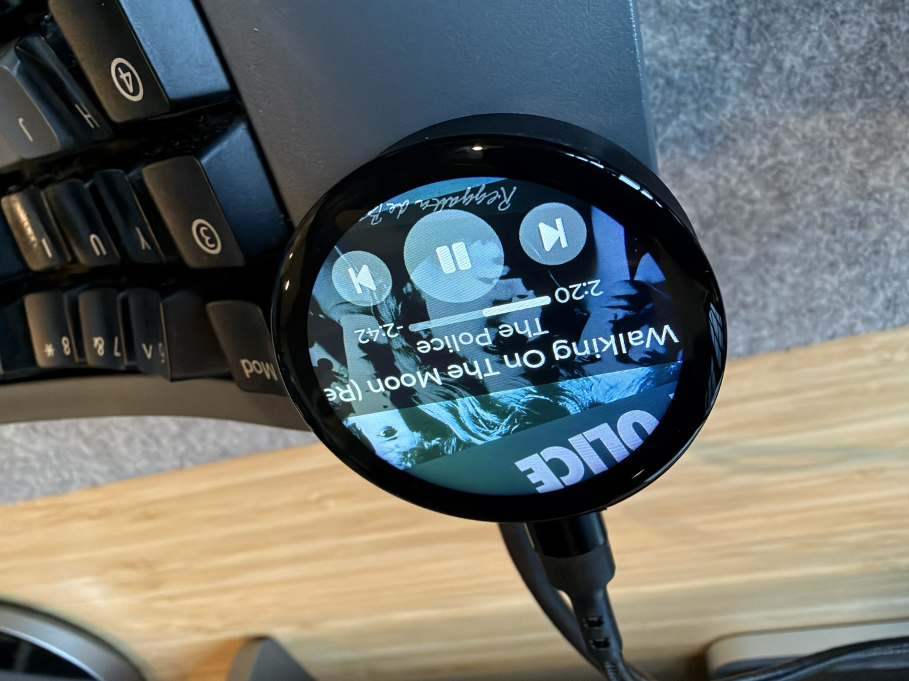

A macOS menu bar app that streams what you're playing (album art, track info, progress) to a USB-connected ESP32 round display.

macOS 13+ Apple Silicon & Intel USB-CEither board works. The app detects which one is attached and sizes the artwork to match.
Pick the image for your board. Each is a single merged image, flashed to offset 0x0.
…for the Waveshare ESP32-S3-Touch-LCD-1.46.
Download firmware-esp32c6.bin…for the Seeed XIAO ESP32-C6 with the Round Display.
Easiest method: open the ESP web tool in Chrome (uses WebSerial), connect to the device, and flash your image at offset 0x0.
Or via the CLI. Install esptool:
pip install esptool # or: brew install esptoolPlug the board in over USB-C, then flash:
# Waveshare ESP32-S3-Touch-LCD-1.46
esptool.py --chip esp32s3 --port /dev/cu.usbmodem* write_flash 0x0 firmware-esp32s3.bin
# Seeed XIAO ESP32-C6 + Round Display
esptool.py --chip esp32c6 --port /dev/cu.usbmodem* write_flash 0x0 firmware-esp32c6.bin/dev/ttyUSB0, COM3, etc). If esptool can't enter download mode automatically, hold the BOOT button while plugging in (or while pressing RESET).Or build from source via ESP-IDF (idf.py set-target esp32s3 or esp32c6, then idf.py build flash) using the firmware/ tree in the repo.
Open the disk image, drag NowPlayingDisplay.app to /Applications, and launch it. It auto-detects the ESP32 over USB and reconnects on replug, no configuration.
To have it start automatically when you log in, click the menu bar icon and toggle Launch at login. macOS will list it under System Settings → General → Login Items, where it can be disabled at any time.
The Mac reads now-playing metadata via the bundled MediaRemoteAdapter.framework, loaded in-process by /usr/bin/python3 (a com.apple.*-signed binary, since macOS 15.4+ only authorizes the private MediaRemote framework for callers with an Apple bundle id, so the bundled py2app Python can't reach it directly). Artwork is converted to RGB565 and pushed to the ESP32 over USB; touches on the round display send prev/play-pause/next back to the Mac.
Firmware and Mac app source live at github.com/gxlabs/now-playing-device, released under the GNU GPL v3.
This project would not be possible without ungive/mediaremote-adapter, which provides the Apple-signed bridge into the private MediaRemote framework on macOS 15.4+. Huge thanks to @ungive for building and maintaining it.
If this project saved you some time or made your desk a little nicer, you can support further work here: